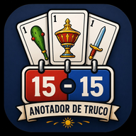
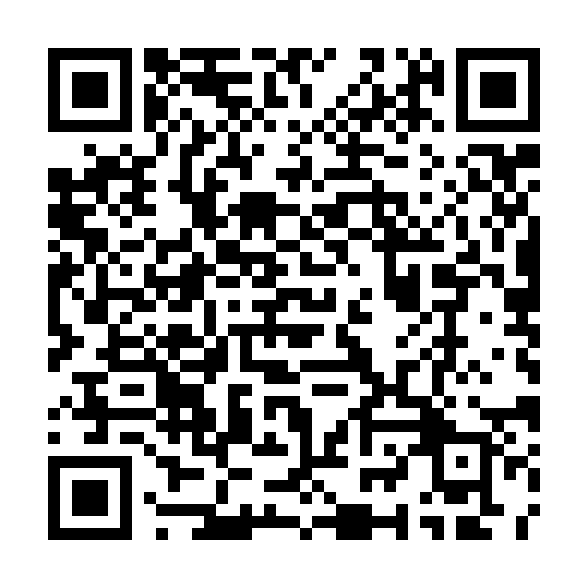

Equipo 1
🪙
100
Apuesta
Sin apuesta
Tu partida, sin papel.
Llevá los puntos de forma rápida y simple. Anotá Truco, Envido y Flor, consultá el historial y seguí jugando aunque cierres la aplicación.
¿Es tu primera vez jugando al Truco?
Configuración de la partida
¿Querés utilizar fichas?
Elegí cuánto apuesta cada equipo
Apuesta
Sin apuesta
Apuesta
Sin apuesta
1 vs 1 · A 15
Objetivo: 15 puntos
Tocá una categoría para ver sus reglas
Aprendé a jugar al Truco de forma simple y paso a paso.
No necesitás leer todo de una vez. Podés abrir solamente el tema que necesites.
Dependiendo de la mesa o del grupo de jugadores, podés escuchar nombres distintos. Algunas personas llaman "mano" a cada baza y "ronda" a la jugada completa. También hay grupos que usan "tantos" para hablar del Envido y "puntos" para referirse al marcador de la partida.
El Truco argentino es un juego de cartas muy popular en Argentina que se juega con una baraja española de 40 cartas.
Cada jugador recibe 3 cartas y juega toda la ronda con esas mismas cartas, sin sacar cartas nuevas del mazo.
Durante el juego pueden aparecer distintos cantos, como el Truco, el Envido y la Flor, que permiten ganar diferentes cantidades de puntos.
Una partida de Truco se puede jugar a 15 o 30 puntos.
El objetivo es que tu equipo llegue a esa cantidad antes que el equipo rival.
En una partida a 30 también vas a escuchar estas expresiones:
Las malas: los primeros 15 puntos.
Las buenas: los últimos 15 puntos.
El Truco puede jugarse de forma individual o por equipos.
1 vs 1: un jugador contra otro.
2 vs 2: dos equipos de dos jugadores.
3 vs 3: dos equipos de tres jugadores.
En partidas con mucha gente también pueden hacerse equipos más grandes, incluso, en casos extremos, hasta 6 vs 6.
Cuando se juega en equipo, los puntos pertenecen al equipo completo, no a cada jugador por separado.
Se utiliza una baraja española de 40 cartas con cuatro palos:
Si tenés un mazo español de 50 cartas, se sacan los 8, los 9 y los 2 comodines.
Así quedan las 40 cartas que se utilizan para jugar.
Cada jugador recibe 3 cartas al comienzo de cada ronda.
Esas son las únicas cartas que va a utilizar durante esa ronda.
No se roba ninguna carta nueva.
Cuando la ronda termina, se juntan todas las cartas y se vuelven a repartir 3 cartas nuevas a cada jugador para empezar a jugar la siguiente mano o ronda.
La palabra tanto puede tener dos significados.
Significa que el equipo ganó 2 puntos.
Significa que el jugador tiene 29 de Envido.
El contexto te permite saber de cuál de los dos significados están hablando.
La palabra mano puede utilizarse de dos formas diferentes.
Es el jugador que empieza a jugar la ronda.
Es quien tira la primera carta y además tiene prioridad en algunas situaciones de empate.
También se puede llamar mano a una ronda completa del juego: desde que se reparten las cartas hasta que termina la jugada.
Son dos usos diferentes de la misma palabra.
El pie es el jugador que está al final del orden de juego.
El pie mezcla y reparte las cartas, mientras que el jugador que está a su izquierda corta el mazo.
Después de repartir, el jugador que está a su derecha pasa a ser la mano y comienza a jugar.
Mano: es el jugador que juega primero.
Pie: juega último, mezcla y reparte. El jugador de su izquierda corta el mazo.
Cuando termina la ronda, este rol cambia a la persona que anteriormente fue mano.
Una baza es cada vuelta en la que todos los jugadores tiran una carta sobre la mesa.
Por ejemplo, en un 2 vs 2:
Cuando los cuatro jugaron, terminó una baza.
Después se compara cuál fue la carta más fuerte y se determina qué jugador o equipo ganó esa baza.
Dentro de una ronda puede haber hasta 3 bazas.
Ronda o mano: la jugada completa con las 3 cartas.
Baza: cada vuelta en la que todos tiran una carta.
La primera baza la comienza siempre la mano.
Después, si existe un ganador claro, la siguiente baza la comienza el jugador que ganó la baza anterior.
Si la baza queda parda, se aplican las reglas de las pardas.
Una ronda puede tener hasta 3 bazas.
Para ganar la ronda, un equipo debe ganar 2 de las 3 bazas.
Si hay pardas, se aplican reglas especiales.
Una baza queda parda cuando los dos equipos juegan cartas de igual valor y ninguno logra superar al otro.
También vas a escuchar expresiones como:
Una parda es, básicamente, un empate de esa baza.
Si la primera baza queda parda, la segunda se vuelve decisiva.
El equipo que gane la segunda baza gana la ronda.
Si la segunda también queda parda, entonces se juega la tercera.
Si la primera baza tuvo un ganador y después la segunda o la tercera queda parda, gana la ronda el equipo que había ganado la primera baza.
Si la primera y la segunda baza quedan pardas, se juega todo a la tercera.
El equipo que gane la tercera baza gana la ronda.
Si las tres bazas quedan pardas, gana la ronda el equipo de la mano.
Es decir, gana el equipo al que pertenece el jugador que comenzó la ronda.
Los puntos se anotan cuando ya quedó definido qué ganó cada equipo durante esa ronda.
En una misma ronda puede ocurrir que:
En ese caso, los dos equipos pueden sumar puntos durante la misma ronda.
Las cartas del Truco tienen una jerarquía especial que determina cuál gana cada baza.
La lista completa está disponible en .
Depende de qué parte del juego estés jugando.
El palo importa especialmente en las cartas más fuertes: 1 de Espada, 1 de Basto, 7 de Espada y 7 de Oro.
En el resto de las cartas que tienen el mismo número, el palo no cambia su fuerza.
El palo es fundamental, porque permite combinar las cartas para calcular el Envido o saber si existe Flor.
Matar una carta significa jugar una carta que le gana en valor a la mejor carta rival que está sobre la mesa.
No.
Para jugar el Truco, las cartas tienen una jerarquía especial que determina cuál gana cada baza.
Para calcular el Envido, en cambio, se utiliza el valor numérico de las cartas.
Podés consultar los valores completos en y .
Irse al mazo significa abandonar la ronda antes de que termine.
Normalmente se hace cuando un jugador o equipo considera que seguir jugando no le conviene.
Los puntos que recibe el rival dependen de lo que ya haya ocurrido o se haya cantado durante la ronda.
No.
Se puede jugar toda una ronda sin cantar Truco, Envido ni Flor.
Si nadie aumenta el valor del Truco, ganar la ronda vale 1 punto.
Sí.
No necesitás tener buenas cartas para cantar Truco.
Parte del juego consiste en intentar hacerle creer al rival que tenés una mano mejor de la que realmente tenés.
Esa parte de engaño y estrategia es una de las características más conocidas del Truco.
Cantar significa anunciar en voz alta un desafío o una apuesta del juego.
Por ejemplo:
Cuando alguien canta algo, el rival generalmente tiene que decidir cómo responder.
Decir "Quiero" significa aceptar el desafío o la apuesta que hizo el rival.
El Truco fue aceptado y la ronda continúa jugando por el valor correspondiente.
Decir "No quiero" significa rechazar el desafío o la apuesta del rival.
Cuando se rechaza un canto, se entregan los puntos que correspondan según lo que se había cantado.
El Truco permite aumentar la cantidad de puntos que vale ganar la ronda.
Sin cantar Truco: 1 punto
Truco: 2 puntos
Retruco: 3 puntos
Vale Cuatro: 4 puntos
El valor del Truco puede subir siguiendo siempre este orden:
No se pueden saltear pasos.
No se puede cantar Retruco si antes no hubo Truco, ni se puede cantar Vale Cuatro si antes no hubo Retruco.
Después de Vale Cuatro, ya no se puede aumentar más el valor del Truco.
Podés consultar los valores aceptados y rechazados en .
El Envido es un canto que compara el valor que forman las cartas de los jugadores.
Se juega al comienzo de la ronda, antes de que avance demasiado el juego de las cartas.
Si tenés dos cartas del mismo palo , sumás sus valores y agregás 20.
Si no tenés dos cartas del mismo palo, se utiliza la carta de mayor valor para el Envido.
Durante una partida podés escuchar cantos como Envido, Real Envido o Falta Envido.
Estos cantos también pueden combinarse y tener distintos valores.
Podés consultar todos los valores, combinaciones y casos especiales en .
Si dos jugadores tienen el mismo Envido, tiene prioridad el jugador que sea mano .
Un jugador tiene Flor cuando sus 3 cartas son del mismo palo .
Si la mesa decidió jugar con Flor, el jugador debe anunciarla.
Jardinera es una forma coloquial de decir que un jugador tiene Flor.
Pero decir "Jardinera" no cuenta como cantar la Flor.
Para realizar el canto, hay que decir "Flor".
No.
Para iniciar el canto, solamente se canta Flor.
Contraflor y Contraflor al resto aparecen como respuesta cuando dos o más jugadores tienen Flor.
Si la partida se juega con Flor y un jugador canta Flor, la Flor tiene prioridad sobre el Envido.
Podés consultar sus valores y situaciones especiales en .
Cuando se juega 2 vs 2, 3 vs 3 o con equipos más grandes, todos los integrantes del mismo equipo juegan para conseguir un marcador en común.
Cada jugador tiene sus propias cartas, pero los puntos obtenidos pertenecen a todo el equipo.
Cuando se juega por equipos, los jugadores normalmente se ubican intercalados alrededor de la mesa .
La idea es que los integrantes de un mismo equipo no queden sentados uno al lado del otro , sino separados por jugadores rivales.
Tu compañero queda ubicado en diagonal respecto de vos , mientras que los jugadores rivales quedan intercalados entre ambos.
Los jugadores de ambos equipos se van alternando alrededor de la mesa, de forma que entre dos compañeros haya un jugador rival.
En partidas de 4 vs 4, 5 vs 5 o 6 vs 6, se mantiene la misma idea: los jugadores de ambos equipos se distribuyen de forma intercalada.
Así, el orden de juego va alternando entre integrantes de los dos equipos.
Las señas son gestos que se utilizan para comunicar ciertas cartas a tus compañeros sin decirlas en voz alta.
Se hacen de forma rápida y disimulada para intentar que solamente las vea tu propio equipo.
La lista completa de señas está disponible en .
Aunque se juegue en equipo, sigue existiendo una sola mano y un solo pie según el orden de la mesa.
La ventaja que tenga uno de esos jugadores también beneficia a todo su equipo.
En muchas partidas en equipo, la mano suele tener un papel importante para decidir cómo comenzar la jugada.
Las señas y las cartas que va mostrando cada jugador permiten que el equipo vaya tomando decisiones durante la ronda.
La ronda se puede jugar normalmente aunque nadie cante Truco, Envido o Flor.
Si nadie canta Truco, ganar la ronda vale 1 punto.
Sí.
El Envido y el Truco son enfrentamientos diferentes dentro de la misma ronda.
En ese caso, cada equipo recibe los puntos que le correspondan.
Sí.
Un equipo puede ganar el Envido y el otro ganar el Truco, por ejemplo.
Por eso una misma ronda puede terminar con puntos para ambos equipos.
Irse al mazo significa abandonar la ronda.
El rival recibe los puntos que correspondan según cómo venía desarrollándose la jugada.
Los valores exactos están explicados en .
Sí.
Cantos como Falta Envido o Contraflor al resto pueden poner en juego una cantidad suficiente de puntos como para definir la partida.
Si ningún jugador tiene Flor, simplemente no se juega esa parte de la ronda.
La partida continúa normalmente con el Truco y, cuando corresponde, el Envido.
Puede significar un punto de la partida o el número de Envido de un jugador.
Puede referirse al jugador que empieza o a una ronda completa del juego.
Jugador que juega último, mezcla y reparte las cartas.
Jugada completa desde el reparto hasta que se define el resultado.
Una vuelta en la que todos los jugadores tiran una carta.
Empate entre las mejores cartas jugadas durante una baza.
Anunciar en voz alta un desafío o una apuesta del juego.
Aceptar un canto realizado por el rival.
Rechazar un canto realizado por el rival.
Jugar una carta que supera a la mejor carta rival que está sobre la mesa.
Abandonar una ronda antes de que termine.
Forma habitual de llamar a una carta número 1.
Por ejemplo: Ancho de Espada.
Canto que aumenta el valor de ganar la ronda a 2 puntos.
Aumenta el valor del Truco a 3 puntos.
Último aumento posible del Truco. La ronda pasa a valer 4 puntos.
Apuesta basada en el valor que forman las cartas del jugador.
Una apuesta de Envido de mayor valor.
Apuesta cuyo valor depende de los puntos que faltan para alcanzar el objetivo.
Se produce cuando un jugador tiene las tres cartas del mismo palo.
Forma coloquial de decir que un jugador tiene Flor.
Decir "Jardinera" no cuenta como cantar Flor.
Respuesta que puede aparecer cuando dos o más jugadores tienen Flor.
Expresión utilizada cuando se ponen en juego los puntos relacionados con lo que falta para cerrar la partida.
Los primeros 15 puntos de una partida a 30.
Los últimos 15 puntos de una partida a 30.
Gesto utilizado para comunicar determinadas cartas a los compañeros de equipo.
Ningún jugador canta Truco, Envido ni Flor.
Los jugadores disputan normalmente las bazas.
El equipo que gana la ronda suma 1 punto.
Se continúa jugando.
El equipo que gane la ronda obtiene 2 puntos.
La disputa del Truco termina en ese momento y se anotan los puntos que correspondan por el rechazo.
Tenés:
Como el 7 y el 6 son del mismo palo:
La mejor carta de un equipo es un 3.
La mejor carta del otro equipo también es un 3.
Como tienen el mismo valor, la baza queda parda.
En la misma ronda, ambos equipos terminaron sumando puntos.
Un jugador recibe:
Como las tres cartas son del mismo palo, tiene Flor.
Para cantarla debe decir:
Desde el menú principal, elegí cuántos jugadores participan, si la partida es a 15 o 30 puntos y si querés utilizar el modo de apuestas con fichas.
El botón +1 suma un punto manualmente.
El botón -1 resta un punto.
Son útiles para realizar correcciones o anotar situaciones manualmente.
Esos botones permiten registrar directamente los puntos obtenidos por esos cantos.
Cuando los utilizás, la jugada también queda registrada en el historial del equipo.
El historial permite ver qué jugadas fueron anotadas para cada equipo.
Cada equipo tiene su propio historial independiente.
Las fichas forman parte del modo opcional de apuestas.
Permiten que ambos equipos elijan una cantidad de fichas antes de comenzar la partida.
No son necesarias para jugar una partida normal.
La partida actual queda guardada en este navegador.
Si cerrás la página, la recargás o volvés más tarde, el anotador puede recuperar la partida que estabas jugando.
Desde el anotador podés utilizar el botón Nueva partida.
Eso finaliza la partida actual y te devuelve a la configuración para comenzar otra.
La sección contiene información más específica sobre cartas, Envido, Flor, señas, Truco y otras situaciones.
Esta guía está pensada principalmente para aprender, mientras que las Reglas sirven como consulta más detallada.
Ganó el Equipo 1

Compartí la app con tus amigos para que puedan instalarla y usarla incluso sin conexión.

Escaneá el QR para abrir la app
Tu opinión nos ayuda a seguir mejorando Anotador de Truco.
Instalá Anotador de Truco para tenerlo en tu pantalla de inicio, abrirlo más rápido y seguir jugando incluso sin conexión.
En iPhone o iPad, tocá Compartir y elegí “Agregar a pantalla de inicio”.